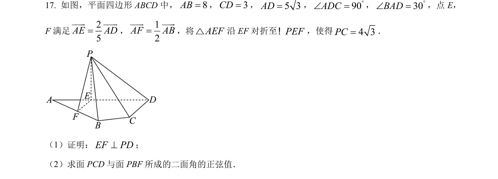
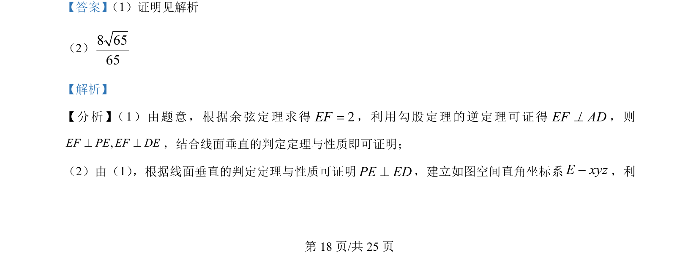
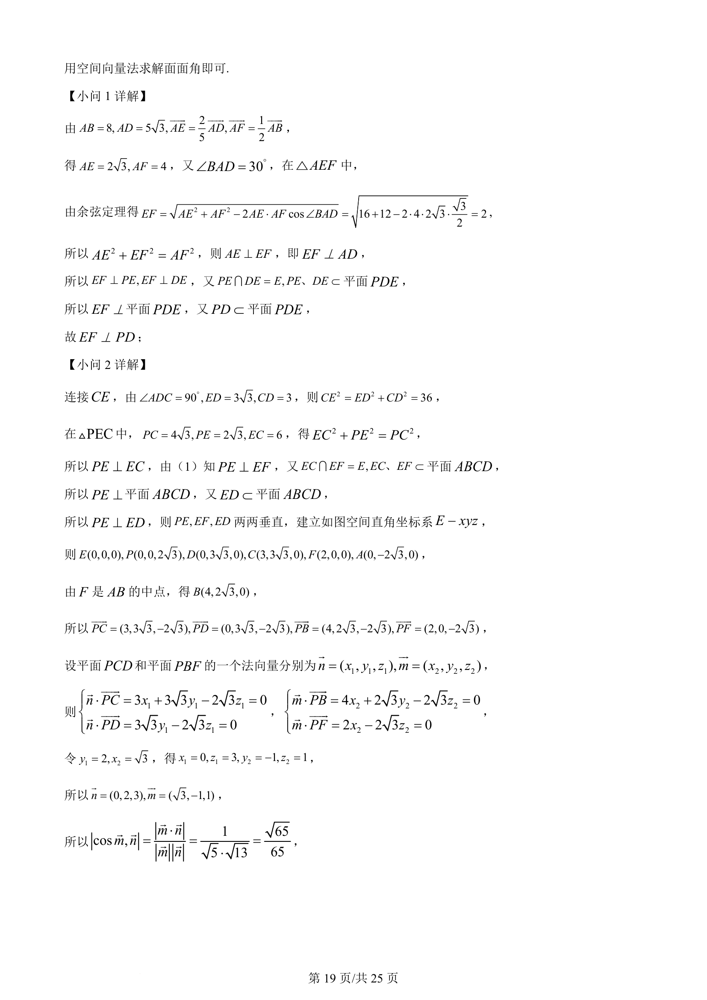
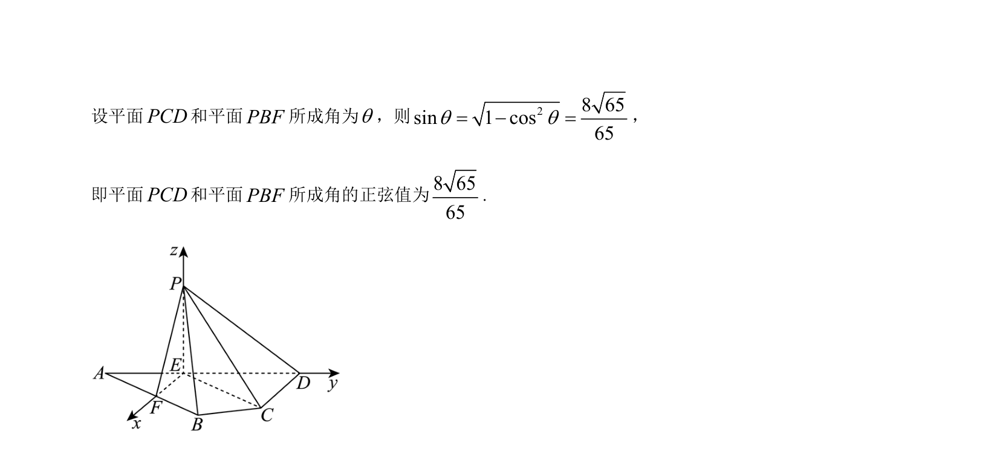

考点：余弦定理 线面垂直 空间向量法 二面角

立体几何题，考查线面垂直的判定与性质，以及用空间向量法求解二面角的正弦值。



📄 原 PDF 第 18 页：
素材/真题/吉林/2008-2024·（吉林）数学高考真题/2024年高考数学试卷（新课标Ⅱ卷）（解析卷）.pdf
【答案】 （1）证明见解析
（2）8 6565
【解析】
【分析】 （1）由题意，根据余弦定理求得2EF=，利用勾股定理的逆定理可证得EF AD^，则
,EF PE EF DE^ ^，结合线面垂直的判定定理与性质即可证明；
（2）由（1） ，根据线面垂直的判定定理与性质可证明PE ED^，建立如图空间直角坐标系E xyz-，利